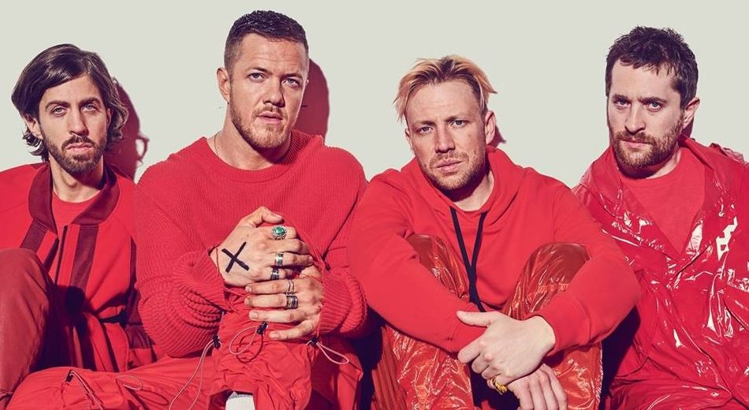

Imagine Dragons is an American indie rock band formed in 2008 in Las Vegas, USA. American Billboard magazine named them the brightest new stars of 2013 and the biggest group of 2017, and Rolling Stone magazine named their single "Radioactive" the biggest rock hit of the year.
Group formation Imagine Dragons is a four-member indie rock band. It was founded in Las Vegas in 2008. The name of the group is an anagram, the meaning of which is known only to the members of the group itself. The history of the group egan with the fact that Daniel Reynolds recruited his friend and fellow college drummer Andrew Tolman to participate in his own group, who, in turn, invited his wife Brittany Tolman (keyboards and backing vocals) and Daniel (Wayne) Sermon to the group. who played the guitar perfectly. The group quickly gained popularity.And already in Las Vegas, bassist Benjamin (Ben) McKee , invited by Wayne, joined Dan and Wayne. In 2010, Andrew and Brittany announced they were leaving the group to start a family. Then Ben McKee invited drummer Daniel (Platz) Platzman to the group. They were later joined by Aurora Florence, replacing Brittany, and after her departure, Teresa Flaminio. After Teresa left, the composition of the group did not change anymore.